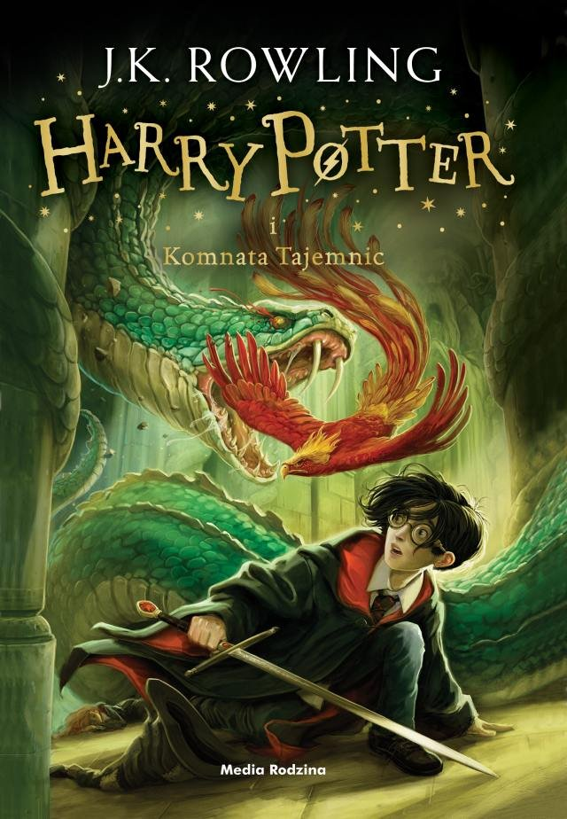
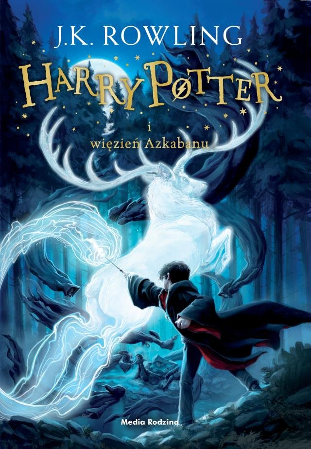
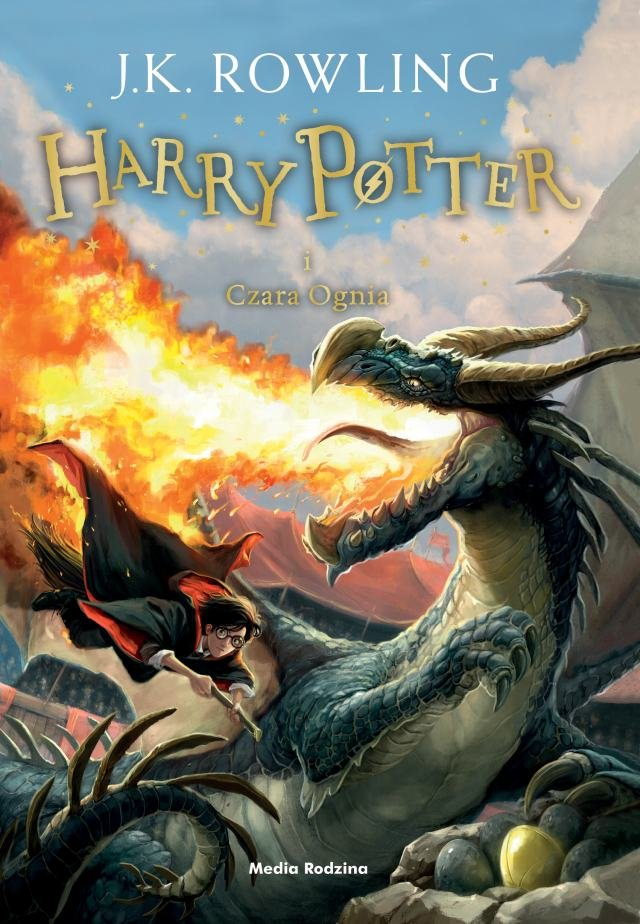
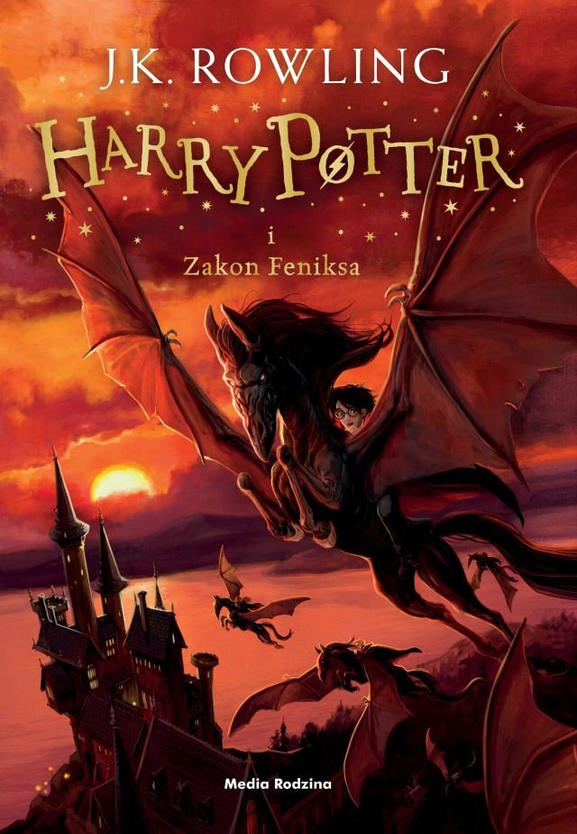
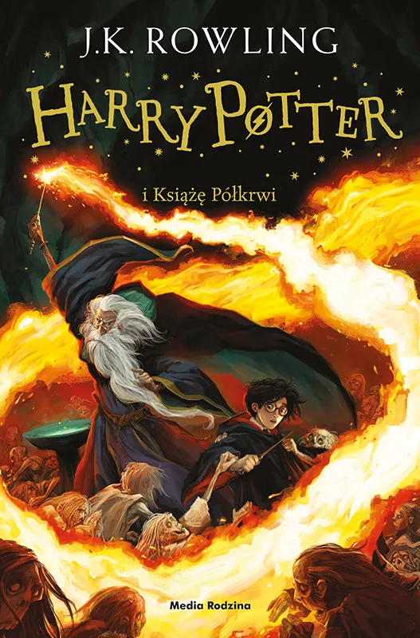
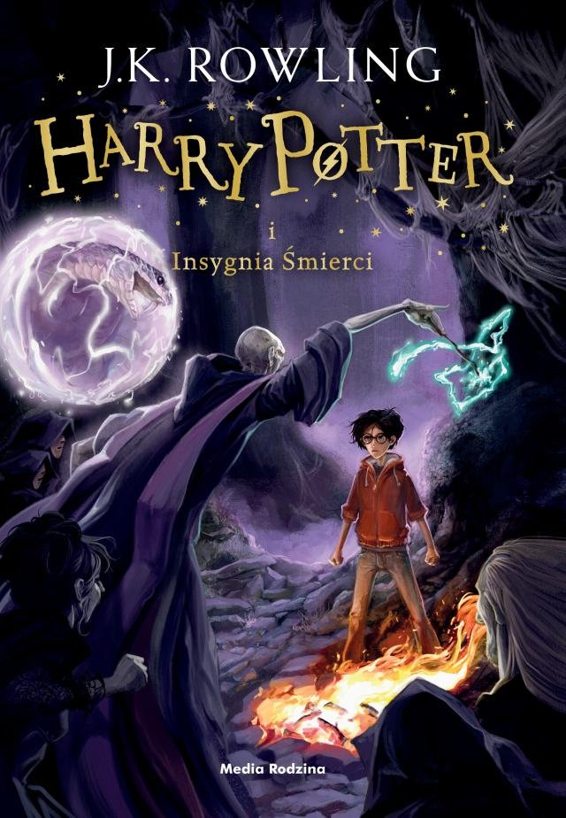

Jest to pierwszy film z serii o przygodach Harry'ego Pottera. Opowiada o chłopcu Harrym Potterze, który w swoje jedenaste urodziny odkrywa, że jest czarodziejem. W rolach głównych wystąpili Daniel Radcliffe jako Harry Potter oraz Emma Watson i Rupert Grint jako jego przyjaciele: Hermiona Granger i Ron Weasley.
HARRY POTTER i komnata tajemnic

Kończą się wakacje i Harry ma wrócić do Hogwartu, jednak coś uniemożliwia jemu i Ronowi przedostanie się na peron. Wykorzystując latający samochód ojca dwójka przyjaciół dociera do Hogwartu, gdzie wkrótce zaczynają się dziać dziwne rzeczy. Kilku uczniów będących dziećmi mugoli zostaje spetryfikowanych. Wiadomo, że zrobił to dziedzic Slytherinu, otwierając Komnatę Tajemnic i wypuszczając z niej straszliwą bestię. Podejrzenia padają na Harry'ego, gdyż posiada rzadki dar rozmawiania z wężami, podobnie jak Lord Voldemort. Szkole grozi zamknięcie, a Hagrid trafia do więzienia w Azkabanie. Harry i jego przyjaciele muszą się podjąć rozwiązania zagadki Komnaty Tajemnic.
HARRY POTTER i więzień azkabanu

Harry Potter i jego najlepsi przyjaciele Ron i Hermiona, po przerwie letniej powracają do Hogwartu, aby rozpocząć trzeci rok nauki. W tym samym czasie z pilnie strzeżonego więzienia dla czarodziejów ucieka niebezpieczny przestępca - Syriusz Black! Wszystko wskazuje na to, że Black poluje na Harry'ego. Cały świat czarodziejów rozpoczyna poszukiwania zbiega; z Azkabanu zostają wysłane przerażające istoty - Dementorzy, w celu zabicia przestępcy... Film "Harry Potter i więzień Azkabanu" to trzecia z kolei ekranizacja powieści J.K. Rowling.
HARRY POTTER i czara ognia

W Hogwarcie rozgrywa się Turniej Trójmagiczny, na który przybywają uczniowie szkół z Francji i Bułgarii. Zgodnie ze starą tradycją, do turnieju mają być wybrani trzej przedstawiciele, każdej ze szkół. Jednak dziwnym zbiegiem okoliczności do turnieju zostaje wybranych czterech uczestników, w tym i Harry Potter. Odtąd na głównego bohatera czekają trzy zadania, a w związku z nimi wiele niesamowitych i niebezpiecznych przygód. Film "Harry Potter i Czara Ognia" to czwarta z kolei ekranizacja powieści J.K. Rowling.
HARRY POTTER i zakon feniksa

Harry Potter tym razem nie może mieć spokojnych wakacji. Lord Voldemort powrócił, a prasa czarodziejska milczy na ten temat. Na mugolskim osiedlu Little Whinging pojawiają się Dementorzy. W dodatku Harry staje przed całym Wizengamotem za użycie czarów przez nieletniego, a Straż Przednia zabiera go do kwatery głównej Zakonu Feniksa. Tymczasem w Hogwarcie rządy przejmuje sprzymierzeniec Korneliusza Knota i nauczycielka obrony przed czarną magią profesor Umbridge. Wygląda na to, że nikt nie wierzy Harry'emu i Dumbledorowi, że Lord Voldemort odrodził się na nowo. Kiedy zaatakuje wszystko wyjdzie na jaw, ale czy wtedy nie będzie już za późno?
HARRY POTTER i książek półkrwi

Za sprawą odrodzenia Lorda Voldemorta, świat magii staje się coraz mroczniejszy. Harry Potter jak co roku rozpoczyna naukę czarów w Hogwarcie. Przez przypadek w jego ręce wpada stary podręcznik do eliksirów, niegdyś należący do Księcia Półkrwi. Oprócz tego młody czarodziej ma do rozwiązania tajemniczą zagadkę horkruksów i podejrzanego zachowania Malfoya. Wraz z dyrektorem szkoły wybiera się w podróże do myślodsiewni, które mają na celu przybliżenie dzieciństwa Toma Riddle'a oraz ukazanie życia jego matki.
HARRY POTTER i insygnia śmierci

Częśc1-w Hogwarcie rozpoczyna się kolejny rok nauki, jednak Harry, Ron Hermiona nie zamierzają podjąć się dalszej edukacji. Zamiast tego wyruszają, by wypełnić zadanie, które Dumbledore powierzył Harry'emu. Na przyjaciół czeka kolejna przygoda, pełna zagadek z przeszłości i niebezpiecznych sytuacji. Tymczasem Lord Voldemort ze swoimi poddanymi wciąż rośnie w siłę.
Część 2 - walka pomiędzy siłami dobra i zła przeradza się w otwartą wojnę. Nikt nie może czuć się bezpieczny. Jest jeszcze Harry, który być może będzie musiał zdobyć się na największe poświęcenie, gdy stanie do ostatecznego pojedynku z Lordem Voldemortem...